done — vs SAM 2.1: MOTA 0.159, IDF1 0.216, matched-egg IoU 0.910 (§7)
Summary
Ground truth: Grounding DINO (text "egg.") → boxes → SAM 2.1 masks, every overlay checked by eye
Split: whole scenes go to one side (85 dev / 25 eval), checked for near-duplicates across the split
Classical method: colour gate → multi-threshold search for egg-shaped blobs → GrabCut edge refinement → watershed split. No learning, all parameters picked on dev
Eval (run once): IoU 0.618 (median 0.817), Dice 0.683, boundary F1 0.489; dev IoU 0.589
Main gap: eggs on white / pale backgrounds and partly hidden eggs — the method relies on "the egg is the brightest egg-shaped thing"
Round 2 (§5): the improvements from the Task 3 analysis, tried one by one on dev → dev IoU 0.589 → 0.669; eval 0.618 → 0.613 → the dev gain did not carry over to the unseen eval scenes. Round 1 stays the clean eval number
Round 3 (§6): decide per scene and check the selection by leave-one-scene-out → the held-out-scene estimate (0.615) matched eval (0.612); round 2's dev number had overshot by 0.056. Same eval as before, with 3 changes instead of 5 and an honest estimate
Task 4 (§7): SAM 2.1 video tracking is the reference. T21 + my tracker: MOTA 0.159, IDF1 0.216. The errors are in the segmentation (touching eggs merged with their reflections on a glossy table, an egg under the hand), not in the tracking
Video as a fresh test: round 1 beats rounds 2/3 here (IoU 0.868 vs 0.681). The skin filter rounds 2/3 turned off is what keeps the reflections out → one more sign the dev decisions don't carry to new scenes
0. Dataset — quick facts
110 images, all 640×640 (Roboflow resized with "stretch")
Roboflow folder export → class labels only. No boxes, no masks.
Near-identical shots: pHash (64-bit DCT), Hamming ≤ 10 → 1 pair, same group
Same scene: DINOv2-small embeddings (CLS + mean patch), average-linkage clustering, cosine distance 0.30 → 35 groups
0.30 picked by looking at the groups. 0.40 merged marble floor with grey floor (19 images) and still split the pot
Manual merges (8): same physical setup the embedding kept apart — pot, keyboard, fridge tray, white bag + holder, pink bowl, painted lid, grey floor, towel + rug → scene_merges.json → 19 groups
Split whole groups. Rules: eval = 17–23% of images; multi-egg share within ±5 points of overall; then as many scenes as possible. Seeded search (seed 42)
Try 1: StratifiedGroupKFold → valid, but eval had only 4 scenes
Try 2: soft penalty → 7 scenes, but only 1 multi-egg image in eval (too easy) → made the multi-egg share a hard rule
Result
dev
eval
Images
85
25
Eggs
109
30
Scenes (groups)
14
5
Images with 2+ eggs
15%
20%
Eval scenes: steel pot (12, incl. 5 multi-egg), painted container (7), dark-room hand (3), blue bowl (2), red bowl (1)
85 : 25 = 77 / 23, not exactly 80 / 20 — whole groups don't divide evenly
Leakage check
For each eval image: cosine similarity (DINOv2) to its most similar dev image.
Split
Mean of max similarity
Eval images with a near-twin in dev (> 0.9)
Random split, same size
0.80
16%
Group split (used)
0.59
0%
pHash near-duplicate pairs across dev / eval: 0
Rules from here on
Split frozen in data/splits/split.csv (committed)
All Task 2 tuning and experiments on dev only — run_experiment.py and sweep.py can't even load eval
Eval touched once, by final_eval.py, which refuses to run a second time into the same folder. (A second, separate look came later in round 2, §5)
Limitations
Scene grouping is partly manual (my judgement) — every merge is listed in a file
Some scene types are only in dev (leaves, ash, bright-room hands, marble-floor multi-egg) → eval numbers say less about those
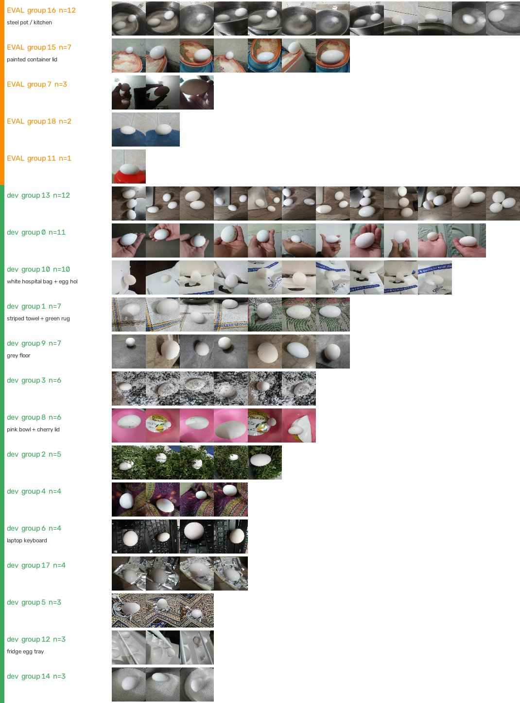
All 19 groups. Orange = eval, green = dev.
3. Task 2b — classical segmentation
Idea in one line
An egg here = a bright, almost colourless, egg-shaped blob. No single threshold separates it from every background → try many thresholds, keep the blobs that look most like an ellipse, then fix their edges with GrabCut and split touching eggs with watershed
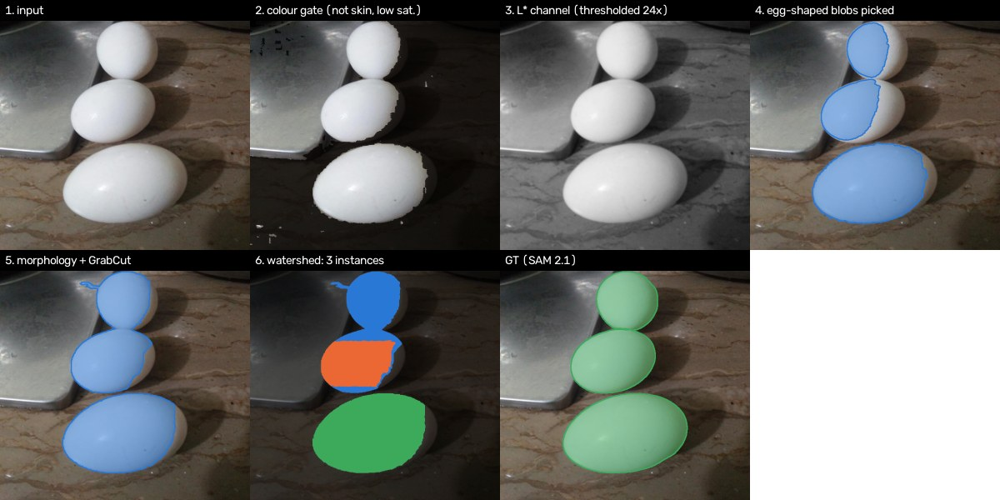
Final pipeline (T11) stage by stage on dev image #136 (three touching eggs). Step 4 keeps only the lit part of each egg; GrabCut (5) grows it to the shaded edge; watershed (6) separates the two eggs GrabCut merged.
Final algorithm (T11) — stages and parameters
Blur: Gaussian 5×5 — shell texture and JPEG noise make ragged blob outlines
Colour gate — remove pixels that can't be egg before any thresholding
Skin: YCbCr box Cb 77–127, Cr 133–173 (Chai & Ngan 1999) → hands / fingers out. Turned out to also remove warm-lit egg pixels — see the §4 ablation
Saturation: HSV S ≤ 40 → coloured bowls, leaves, pink lids out (eggs are white / grey)
Multi-threshold egg search on the Lab L* channel (my own stage, similar idea to MSER)
24 thresholds, evenly spaced between the 20th and 99.5th percentile of L* in that image
At each: L* ≥ t AND colour gate → opening 3 px (cuts thin bridges to background) → connected components → fill holes
Shape check per blob: area 0.003–0.6 of the image, solidity ≥ 0.85, axis ratio ≤ 2.2, ≤ 0.35 of the outline on the image border
Egg score = IoU(blob, its fitted ellipse) × solidity — an egg seen from above is ~1.0; background blobs are not. Keep score ≥ 0.8
Pick greedily, best score first. The same egg shows up at several thresholds (nested blobs) → take the largest one within 0.03 of the best score, so the egg isn't shrunk to its bright centre. Skip blobs that overlap a picked egg by > 0.2
Fallback: if nothing reaches 0.8, search once more with score ≥ 0.65 (only images that would otherwise be empty)
GrabCut (Rother 2004) on the original colours, seeded from the mask
Mask eroded by 10 px = sure egg · mask = probably egg · up to 70 px around it = probably background · further away = sure background
5 iterations, fixed RNG seed; new blobs that don't touch the seed are dropped
Why: the search finds the lit part of the egg. The shaded side is often darker than parts of the background, so no threshold gets it — a colour model (GMM + graph cut) can
Watershed (Vincent & Soille 1991) on the distance transform of each blob: cores = pixels ≥ 0.6 × max distance (≥ 30 px) → one instance per core. Splits touching eggs (needed for Task 4)
Output: binary mask + instance mask per image. 1.38 s / image on CPU (most of it GrabCut)
Code: src/eggseg/classical.py (one small function per stage), parameters: configs/default.yaml + experiments/T11/config.yaml
How I ran experiments
Each trial = a folder experiments/Tn/ with config.yaml: which trial it builds on, what changed, why, decision + reason (written after the run)
run_experiment.py runs it on the 85 dev images → results.json, per-image CSV, worst-case panels. Small parameter sweeps with sweep.py, also dev only
Decision rule (fixed before starting): keep a change if dev mean IoU goes up; if IoU ties, keep only if boundary F1 or instance F1 improves
Metrics (same code as Task 3): IoU, Dice, pixel precision / recall, boundary F1 (2 px), instance F1 (match at IoU ≥ 0.5), number of empty predictions
Table and per-trial notes below are generated from those files (build_log.py → experiments/LOG.md), not typed
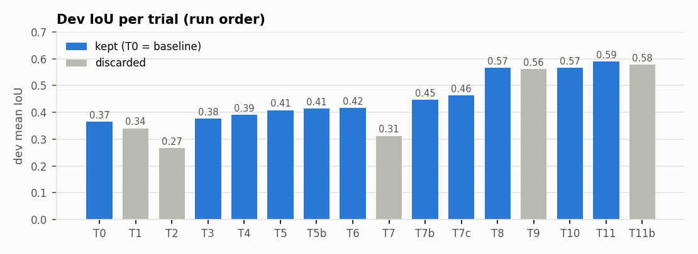
Dev mean IoU of every trial in the order I ran them. Grey = discarded.
Experiment log — all trials (dev, 85 images)
Trial
Change
IoU mean
IoU med.
Prec.
Recall
Bnd F1
Inst F1
Empty
Decision
T0
Otsu threshold on grayscale (baseline)
0.366
0.273
0.407
0.879
0.158
0.008
0
baseline
T1
Otsu on CIE Lab L* instead of grayscale
0.340
0.256
0.373
0.896
0.143
0.007
0
discarded
T2
+ gray-world white balance and CLAHE on L*
0.266
0.206
0.282
0.875
0.077
0.005
0
discarded
T3
+ remove skin pixels (YCbCr box, Chai & Ngan 1999)
0.377
0.290
0.451
0.815
0.159
0.007
0
kept
T4
+ keep only low-saturation pixels (HSV S <= 60)
0.392
0.292
0.470
0.815
0.172
0.008
0
kept
T5
k-means (k=3) in Lab instead of Otsu; keep the brightest, least-coloured cluster
0.408
0.333
0.523
0.741
0.189
0.013
0
kept
T5b
k-means candidate + low-saturation filter (S <= 40, from the T4 sweep)
Multi-threshold egg search (24 thresholds, blobs scored by ellipse fit x solidity) replaces the single Otsu/k-means threshold
0.448
0.466
0.879
0.464
0.249
0.473
12
kept
T7c
Search on Lab L* instead of grayscale (from the T7b channel sweep)
0.464
0.483
0.902
0.483
0.257
0.493
11
kept
T8
+ GrabCut refinement seeded from the mask (eroded = sure egg, >70 px outside = sure background)
0.566
0.654
0.894
0.605
0.445
0.608
11
kept
T9
+ ellipse regularisation (blobs with ellipse IoU >= 0.9 are replaced by their fitted ellipse)
0.561
0.644
0.887
0.603
0.331
0.608
11
discarded
T10
+ distance-transform watershed to split touching eggs into separate instances
0.566
0.654
0.894
0.605
0.445
0.618
11
kept
T11
Fallback pass with a looser shape score (0.65) for images where the search found nothing
0.589
0.660
0.833
0.639
0.458
0.569
2
kept
T11b
Fallback pass returns at most 1 egg
0.579
0.660
0.821
0.618
0.456
0.603
2
discarded
How the experiments led to the algorithm
T0–T1: one global threshold. Otsu on grey (0.366) finds eggs (recall 0.88) but also every bright background (precision 0.41). L* alone was worse
T2: global colour fixes hurt (0.266) — gray-world and CLAHE brighten the background as much as the egg
T3–T5b: remove what can't be egg — skin, then saturated colour, then k-means in Lab instead of Otsu. Small, steady gains (0.377 → 0.415), precision still poor
T6–T7: clean-up and shape filters. Morphology was a tie. Shape filters on the single-threshold mask broke it (0.312, 36 empty masks): the egg is often glued to bright background, so filtering throws the egg away with it → the threshold itself is the problem
T7b–T7c: search over thresholds with an egg-shape score — the key change. Precision jumps (0.53 → 0.88), IoU 0.464. Now the failure flips to under-segmentation (recall 0.48)
T8: GrabCut fixes exactly that — biggest single gain (0.464 → 0.566, boundary F1 0.26 → 0.45)
T9: ellipse fitting made edges worse (real eggs aren't perfect ellipses, partly hidden eggs even less) → discarded
T10: watershed — no IoU change (as expected), instance F1 0.608 → 0.618
T11: fallback pass for images with no egg found: empty masks 11 → 2, IoU 0.566 → 0.589 — but more false eggs (instance F1 0.569); T11b tried to limit that and lost IoU
T0 Otsu threshold on grayscale (baseline) baseline
Why: Eggs are usually the brightest thing in the photo; Otsu picks the bright/dark split with no tuning.
Params: on top of default → none (baseline)
Dev: IoU 0.366 (median 0.273), boundary F1 0.158, instance F1 0.008, empty masks 0
Decision: Reference point. High recall but low precision: Otsu takes every bright region, not just the egg.
T1 Otsu on CIE Lab L* instead of grayscale discarded
Why: L* is perceptual lightness and ignores colour, so e.g. a saturated pink bowl is not "brighter" than it looks.
Params: on top of T0 → candidate: {"channel": "L"}
Dev: IoU 0.340 (median 0.256), boundary F1 0.143, instance F1 0.007, empty masks 0
Decision: IoU fell (vs T0). With one global threshold, L* lets in even more bright background. Re-tested later inside the multi-threshold search (T7c), where it won.
T2 + gray-world white balance and CLAHE on L* discarded
Why: Warm bulbs tint white eggs cream; CLAHE lifts eggs in dim/backlit photos.
Params: on top of T1 → preprocess: {"white_balance": true, "clahe": {"enabled": true, "clip": 2.0, "tile": 8}}
Dev: IoU 0.266 (median 0.206), boundary F1 0.077, instance F1 0.005, empty masks 0
Decision: IoU fell sharply. Gray-world shifts colours in scenes dominated by one colour (pink bowl, green leaves), and CLAHE brightens the background as much as the egg, so Otsu took more background.
T3 + remove skin pixels (YCbCr box, Chai & Ngan 1999) kept
Why: 14 images have a hand; a lit palm is as bright as the egg and gets swallowed by Otsu.
Params: on top of T0 → skin: {"enabled": true}
Dev: IoU 0.377 (median 0.290), boundary F1 0.159, instance F1 0.007, empty masks 0
Decision: IoU and precision up vs T0; palms stop being swallowed with the egg.
T4 + keep only low-saturation pixels (HSV S <= 60) kept
Why: Eggs are white/cream (near-colourless); many bright backgrounds are coloured (pink bowl, green leaves, wood, rugs).
Params: on top of T3 → saturation: {"enabled": true, "s_max": 60}
Dev: IoU 0.392 (median 0.292), boundary F1 0.172, instance F1 0.008, empty masks 0
Decision: IoU up vs T3. Sweep T4_s_max: 25 and 40 tie, 40 used from T5b on because it is gentler on cream eggs.
T5 k-means (k=3) in Lab instead of Otsu; keep the brightest, least-coloured cluster kept
Why: Otsu splits the histogram in two; with 3 clusters, egg / bright background / dark background can separate.
Params: on top of T3 → candidate: {"method": "kmeans", "k": 3, "chroma_weight": 1.0}
Dev: IoU 0.408 (median 0.333), boundary F1 0.189, instance F1 0.013, empty masks 0
Decision: Better than Otsu (T4) as the candidate generator: IoU and precision up.
T5b k-means candidate + low-saturation filter (S <= 40, from the T4 sweep) kept
Why: T4 and T5 helped separately; check whether they stack.
Params: on top of T5 → saturation: {"enabled": true, "s_max": 40}
Dev: IoU 0.415 (median 0.333), boundary F1 0.194, instance F1 0.015, empty masks 0
Decision: T4 and T5 stack: IoU up again.
T6 + morphology (open r=3, close r=7, fill holes) kept
Why: Raw masks are speckled (ash, rug texture) and have holes at specular highlights and dirt marks.
Params: on top of T5b → morphology: {"enabled": true, "open": 3, "close": 7, "fill_holes": true}
Dev: IoU 0.416 (median 0.340), boundary F1 0.216, instance F1 0.091, empty masks 0
Decision: IoU about the same, boundary F1 and instance F1 clearly up (fewer specks, filled highlights).
Why: Precision is the problem (~0.5); most false positives are big, irregular or border-hugging bright background regions.
Params: on top of T6 → components: {"enabled": true}
Dev: IoU 0.312 (median 0.000), boundary F1 0.184, instance F1 0.482, empty masks 36
Decision: IoU fell and 36 dev images got an empty mask: one global threshold glues the egg to bright background (ash, cables, white bag, towel), so the shape filter throws the egg away together with the background. Sweep T7_open: stronger opening helps but stays below T6.
T7b Multi-threshold egg search (24 thresholds, blobs scored by ellipse fit x solidity) replaces the single Otsu/k-means threshold kept
Why: T7 failed because one global threshold glues the egg to bright background, so the shape filter throws both away (36 empty images). Trying many thresholds gives the egg a chance to separate at some level.
Params: on top of T6 → candidate: {"method": "search", "channel": "gray"}, components: {"enabled": false}
Dev: IoU 0.448 (median 0.466), boundary F1 0.249, instance F1 0.473, empty masks 12
Decision: Best so far and precision up a lot; fixes the T7 failure mode. Sweeps: min_score 0.75 and 0.8 tie on mean IoU, 0.8 kept for its better median and instance F1; s_max 40 still best.
T7c Search on Lab L* instead of grayscale (from the T7b channel sweep) kept
Why: T1 rejected L* with a single Otsu threshold; with shape-scored multi-threshold search the comparison can come out differently, so it was re-tested.
Params: on top of T7b → candidate: {"channel": "L"}
Dev: IoU 0.464 (median 0.483), boundary F1 0.257, instance F1 0.493, empty masks 11
Decision: IoU up vs T7b: the channel sweep reverses the T1 result once candidates are chosen by shape.
T8 + GrabCut refinement seeded from the mask (eroded = sure egg, >70 px outside = sure background) kept
Why: The search under-segments (precision ~0.88, recall ~0.48) - it often keeps only the bright cap of the egg. GrabCut's colour models can grow the mask out to the real egg edge.
Params: on top of T7c → grabcut: {"enabled": true, "iters": 5, "erode": 10, "bg_dilate": 70}
Dev: IoU 0.566 (median 0.654), boundary F1 0.445, instance F1 0.608, empty masks 11
Decision: Largest single gain: GrabCut grows the egg cap out to its real edge (recall and boundary F1 up). bg_dilate 70 chosen by sweep T8_bg_dilate. Two code fixes found here: fixed RNG seed (runs were not repeatable) and drop GrabCut blobs that don't touch the seed (they were new background objects).
T9 + ellipse regularisation (blobs with ellipse IoU >= 0.9 are replaced by their fitted ellipse) discarded
Why: Eggs are near-elliptical from most viewpoints; snapping clean blobs to the ellipse should fix dents from highlights/shadows on the outline. Irregular blobs (eggs behind fingers/leaves) are left alone because the GT only covers the visible part.
Params: on top of T8 → ellipse: {"enabled": true, "min_fit_iou": 0.9, "mode": "replace"}
Dev: IoU 0.561 (median 0.644), boundary F1 0.331, instance F1 0.608, empty masks 11
Decision: IoU slightly down and boundary F1 down a lot: real egg outlines are egg-shaped (one blunt end), not ellipses, so snapping moves correct edges. Stricter fit (sweep T9_min_fit_iou) still loses.
T10 + distance-transform watershed to split touching eggs into separate instances kept
Why: 5 images have touching eggs; a merged blob counts as zero correct instances. Binary IoU barely changes; instance F1 should.
Params: on top of T8 → watershed: {"enabled": true, "peak_rel": 0.6, "min_core_px": 30}
Dev: IoU 0.566 (median 0.654), boundary F1 0.445, instance F1 0.618, empty masks 11
Decision: Binary IoU unchanged (as expected), instance F1 up: touching eggs now come out as separate objects. Needed for Task 4 tracking.
T11 Fallback pass with a looser shape score (0.65) for images where the search found nothing kept
Why: 11 dev images still get an empty mask (IoU 0). The min_score sweep showed 0.6 leaves only 2 empty but hurts the other images, so the looser score is applied only where the strict pass found nothing.
Params: on top of T10 → candidate: {"fallback_min_score": 0.65}
Dev: IoU 0.589 (median 0.660), boundary F1 0.458, instance F1 0.569, empty masks 2
Decision: IoU up and empty masks 11 -> 2 (the two left, #30 and #155, are white eggs in front of a white bag / white wall: at every threshold the egg merges with the background, so no egg-shaped blob exists). Cost: instance F1 down, because on hard images the looser pass also returns non-egg blobs. Sweep T11_fallback_min_score: 0.65 has the best IoU; 0.72 gives better instance F1 but loses IoU.
T11b Fallback pass returns at most 1 egg discarded
Why: T11 removed 9 of 11 empty masks but its looser score also picked wrong blobs (precision and instance F1 down). An image that needs the fallback is a hard image; taking only its single best egg should keep the gain without the extra false eggs.
Params: on top of T11 → candidate: {"fallback_max_eggs": 1}
Dev: IoU 0.579 (median 0.660), boundary F1 0.456, instance F1 0.603, empty masks 2
Decision: Instance F1 recovers most of what T11 lost, but IoU falls. Only 4 dev images change, all with 1 GT egg: on these hard images the best-scoring fallback blob is often not the egg (#118: the egg was one of T11's 3 blobs, the cap kept a background one). The score can't rank egg vs background here, so capping doesn't help. IoU first -> T11 stays final.
Things that didn't work (summary)
Global colour normalisation (gray-world, CLAHE) — T2
Shape filtering after a single threshold — T7: correct idea, wrong place. Moved into the threshold search (T7b)
Ellipse replacement of the final mask — T9 (and the min-fit sweep: only harmless when it almost never fires)
Capping the fallback to 1 egg — T11b: fewer false eggs, but on those hard images the best-scoring blob is often not the egg
Bugs found on the way, each from looking at worst-case panels: GrabCut not repeatable (no RNG seed), GrabCut adding far-away background blobs, a degenerate fitEllipse result that tried to allocate 71 GB
4. Task 3 — evaluation & analysis
Setup
GT = Task 1 SAM 2.1 masks, prediction = final pipeline T11, frozen before eval was opened
final_eval.py ran dev + eval once (2026-10-30T15:17:18); analyze.py makes every number and plot below from its saved outputs
Metrics and why:
IoU / Dice — overall overlap, the "match Task 1 quality" number. Per image, then averaged (an empty prediction counts as 0)
Pixel precision / recall — tells over- vs under-segmentation apart
Boundary F1 at 2 px — edge quality; IoU is forgiving on big eggs
Instance precision / recall / F1 (match at IoU ≥ 0.5) and exact egg count — what Task 4 tracking needs
Quantitative results
Metric (per-image mean unless noted)
dev (n=85)
eval (n=25)
IoU
0.589
0.618
IoU — median
0.660
0.817
Dice
0.680
0.683
Pixel precision
0.833
0.824
Pixel precision — median
0.990
0.994
Pixel recall
0.639
0.683
Boundary F1 (2 px)
0.458
0.489
Instance precision (IoU ≥ 0.5, pooled)
0.490
0.742
Instance recall (IoU ≥ 0.5, pooled)
0.679
0.767
Instance F1
0.569
0.754
Egg count exactly right (share of images)
0.671
0.800
Images with an empty prediction
2
2
Seconds per image (CPU)
1.52
1.38
Eval is a bit higher than dev (IoU 0.618 vs 0.589). Not tuning luck — scene mix: the hardest backgrounds (white bag, ash, fridge tray, all IoU ≤ 0.34) are only in dev; eval's biggest scene is the steel pot (10 images, IoU 0.83)
All-or-nothing: mean ≪ median. Eval: 13 / 25 images at IoU ≥ 0.8, 4 at exactly 0. Dev: 31 / 85 and 8. When the method finds the egg it's usually good; the mean is dragged down by misses
Under-segmentation, not false background: pixel precision median 0.99 (eval), recall mean only 0.68 → what's predicted is almost always egg, but part of the egg is missing
Edges: boundary F1 0.49 — even good masks are often more than 2 px off SAM's edge, mostly on the shaded rim
Instances: eval instance F1 0.75, dev only 0.57 — dev has keyboards, ash and white bags where extra blobs pass as eggs (instance precision 0.49; e.g. dev #18: 8 predicted eggs for 1 real). Egg count exactly right: 80% of eval images
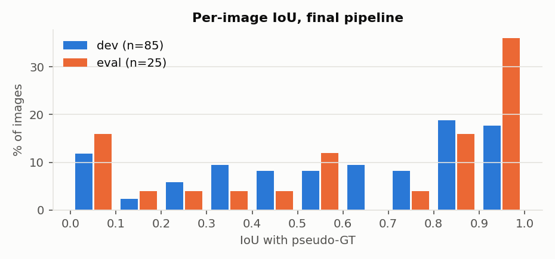
Per-image IoU, dev vs eval (share of images per 0.1 bin).
What the error depends on
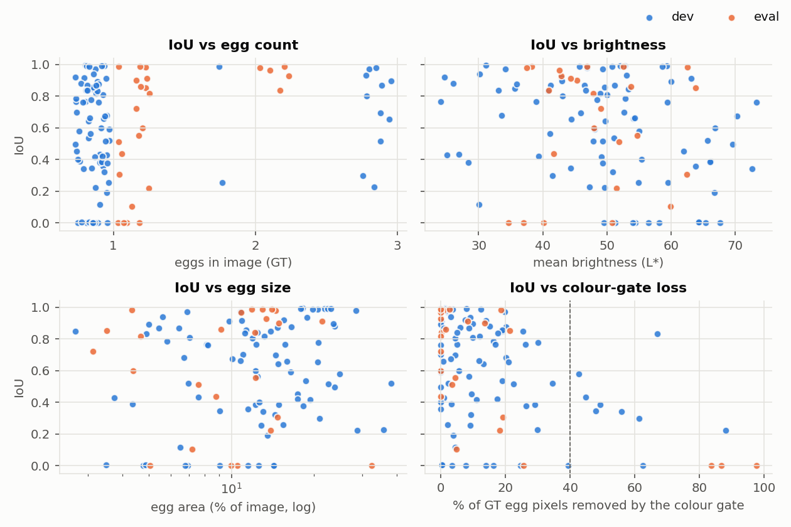
Per-image IoU against number of eggs, image brightness and egg size. Spearman ρ (dev + eval): brightness -0.264, egg area 0.128.
Colour-gate loss is the strongest factor (ρ = -0.336): in 12 images the skin / saturation gate throws away ≥ 40% of the egg before thresholding → mean IoU 0.29 vs 0.63 for the rest. Almost all of it is the skin box, not saturation (diagnostics.csv)
Hand in the image: mean IoU 0.43 vs 0.62. On eval all 3 hand images score 0 — the dark-room / backlit shots
Brightness, egg size: weak (ρ = -0.264 and 0.128). Bright images are often white backgrounds, hence the slight negative trend
Egg count: multi-egg images do better (2 eggs 0.85, 3 eggs 0.71, 1 egg 0.56) — they were shot on high-contrast surfaces (steel pot, marble), so this is a scene effect, not a count effect
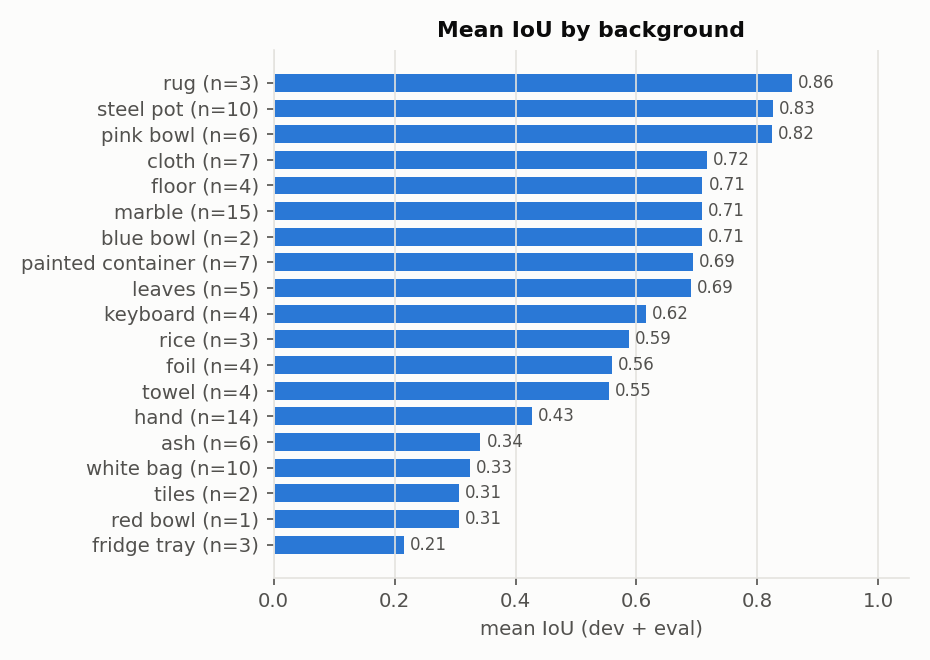
Mean IoU by background type (my manual labels in data/processed/attributes_manual.csv, dev + eval).
Works: coloured or dark backgrounds — rug, steel pot, pink bowl (IoU ≥ 0.82)
Fails: backgrounds as bright and colourless as the egg — fridge tray 0.21, white bag 0.33, pale tiles 0.31 — and ash 0.34 (egg dusted with the same grey). Red bowl is a single image
That's the core assumption of the method breaking: "egg = brightest, least-coloured, egg-shaped thing"
Failure taxonomy
Failure = IoU < 0.7 → 58 images (dev + eval)
I looked at every one (sheets in results/analysis/failures/) and gave each one primary cause → failure_labels.csv
Primary cause
dev
eval
total
white / pale background
15
3
18
shaded side missed
12
3
15
colour gate removes egg
7
3
10
egg partly hidden
4
1
5
bright object picked
4
1
5
ash camouflage
4
0
4
touching eggs
1
0
1
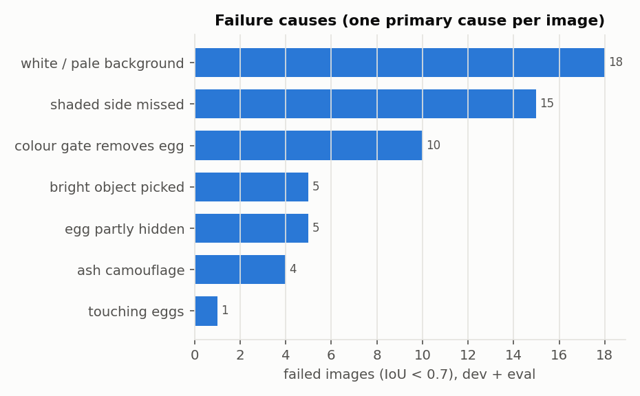
Primary cause of each failed image.
How labelled: (1) if most of the error is missed egg (FN > FP) and the colour gate removed ≥ 40% of the egg → "colour gate removes egg"; (2) otherwise by eye from the failure sheet. Notes per image in failure_labels.csv
White / pale background (18) — no threshold separates egg from bag / tray / wall; the blob that comes out isn't egg-shaped → egg missed, or the bag picked instead
Shaded side missed (15) — search keeps the lit half; the shaded half is darker than the surface next to it, and GrabCut only partly recovers it
Colour gate removes egg (10) — the Chai & Ngan skin box also matches cream eggs, eggs under warm light, and backlit eggs. All 3 eval misses in the dark-room scene are this (84–98% of the egg removed)
Bright object picked (5) — keyboard keys, foil, polished steel: bright, colourless and convex enough to pass the egg score
Egg partly hidden (5) — leaves, tray bars, boiling water: the visible part isn't egg-shaped
Ash camouflage (4) — egg dusted with ash, lying on ash: same grey, same texture; either nothing egg-shaped is found or the ash patch is taken with the egg
Touching eggs (1) — the merged blob of 3 touching eggs fails the shape score before watershed ever sees it
Bad GT: 0 — no failure was caused by a wrong SAM mask (the known GT error, #17, is not among the failures)
#20, #24, #44 — one scene: egg held up against a lamp / bright wall in a dark room. Backlit, the egg looks orange-brown → the skin box removes 84–98% of it → nothing egg-like is left (#44 keeps two finger blobs, #24 a wall switch, #20 nothing)
#139 — white egg against a pale wall: egg and wall merge at every threshold, so no blob is egg-shaped, even at the fallback score
#149 — same as #139 with pale tiles: only a small highlight on the egg is kept
#110 — pale wall again; this time the wall itself is taken (big red area) together with a corner of the egg
#31 — lit top half found; the shaded lower half is not recovered by GrabCut
#153 — egg itself is right; a bright patch of steel / water next to it passes as a second egg
Ablation — what each stage still adds (dev, after the eval run)
Final pipeline with one stage switched off at a time, dev only (ablation.py). Several stages were accepted early, on top of a much simpler method — do they still help?
Run after the eval run, as part of this analysis → nothing here changes the reported pipeline or its eval numbers
Dev, one stage off
IoU mean
Δ IoU
Prec.
Recall
Bnd F1
Inst F1
Empty
final pipeline
0.589
0.833
0.639
0.458
0.569
2
no skin filter
0.609
+0.020
0.835
0.657
0.477
0.573
2
no saturation filter
0.587
-0.001
0.815
0.643
0.457
0.548
2
no morphology
0.580
-0.009
0.836
0.628
0.448
0.564
2
no GrabCut
0.483
-0.105
0.841
0.514
0.266
0.467
2
no fallback pass
0.566
-0.023
0.894
0.605
0.445
0.618
11
no watershed
0.589
+0.000
0.833
0.639
0.458
0.564
2
GrabCut is the most important stage: without it IoU 0.483, boundary F1 0.266
Fallback pass: removing it gives back exactly T10 (11 empty masks) → the IoU / instance-F1 trade-off from the log
Watershed: same IoU by design, instance F1 0.564 → 0.569. Only 5 images have touching eggs
The skin filter now hurts: without it dev IoU goes 0.589 → 0.609. It helped in T3, when the candidate was one Otsu threshold that grabbed whole hands. The shape search ignores hands anyway (not egg-shaped), so the skin box now mostly deletes warm-lit egg pixels — the same thing the colour-gate diagnostic and the failure taxonomy show. Lesson: re-check early decisions once the pipeline around them changes
I did not switch it off in the final pipeline: that would be a change made after seeing eval results, and the eval run would no longer be a clean test. It's the first item below
Performance gaps → what I'd improve
Colour gate (10 failures + part of "shaded side"). Drop the skin box, or only remove skin regions that are large and touch the image border (hands come in from the edge). Dropping it alone: dev IoU 0.589 → 0.609 (ablation above)
White / pale backgrounds (18, the biggest group). Brightness and colour carry no signal there → use edges and shading: an egg is a smooth closed outline with a soft shading gradient and a cast shadow. E.g. ellipse detection on edges (Hough / RANSAC on Canny), or a gradient term in the egg score
Shaded side missed (15). The search finds the lit cap; give GrabCut the cap's fitted ellipse (slightly enlarged) as "probably egg". T9 forced the ellipse as the final mask, which was too strong; as a GrabCut seed the colour model still decides
False eggs on keys, foil, steel (5) and from the fallback pass. Add a check for straight edges / corners and high-frequency texture — eggs have neither
Touching eggs: split merged blobs with watershed before the shape score, so 2–3 touching eggs aren't rejected as one non-egg blob
Evaluation itself: GT is SAM pseudo-GT, so boundary F1 at 2 px also counts SAM's edge error; a few hand-drawn masks would show how much of the gap is the GT. Eval has only 5 scenes → per-scene numbers say more than the mean
→ All five were tried in round 2 (§5), each as its own dev trial
Bottom line: the method does well when the egg is the brightest, least-coloured, egg-shaped thing in view (IoU ≥ 0.8 on 13 / 25 eval images), and fails completely when that's not true. Closing the rest of the gap to SAM needs cues beyond brightness — edges, shading, context
5. Round 2 — improving the method after the analysis
Why a second round, and the rules
Round 1 (§3–4) is kept exactly as it was — trials T0–T11b, the one clean eval run of T11 (IoU 0.618), the failure taxonomy
Round 2 = the five improvements listed at the end of §4, each tried as its own trial (T12 onwards) on dev only, same decision rule as round 1
The ideas came from looking at round-1 failures, eval images included → the round-2 eval number is a second look at eval, not a clean test. Reported separately, never replaces the round-1 number
Code: every new option defaults to off, and T11 was re-run after the changes: 85 / 85 dev images give the same IoU → round 1 still reproduces
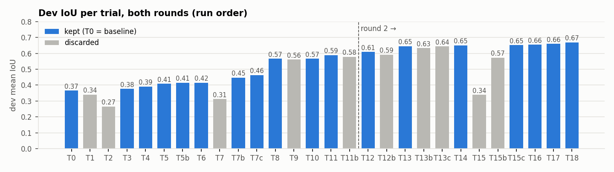
Dev mean IoU of every trial, both rounds. Grey = discarded.
Round-2 experiment log (dev, 85 images)
Trial
Change
IoU mean
IoU med.
Prec.
Recall
Bnd F1
Inst F1
Empty
Decision
T12
skin filter off
0.609
0.667
0.835
0.657
0.477
0.573
2
kept
T12b
skin filter only removes large skin regions that touch the image border
0.592
0.660
0.835
0.642
0.462
0.571
2
discarded
T13
GrabCut also gets each egg's fitted ellipse (x1.15) as 'probably egg'
0.646
0.717
0.807
0.721
0.517
0.615
2
kept
T13b
Local Otsu growth around each found egg before GrabCut
0.633
0.727
0.823
0.691
0.493
0.588
2
discarded
T13c
T13 + local Otsu growth (both shaded-side fixes together)
0.645
0.716
0.788
0.738
0.502
0.626
2
discarded
T14
Split non-egg-shaped blobs with watershed inside the search and score each piece
0.650
0.717
0.804
0.740
0.524
0.617
2
kept
T15
Egg score also rewards blob outlines that lie on Canny edges (weight 0.5)
0.339
0.000
0.685
0.379
0.306
0.406
33
discarded
T15b
Add ellipses fitted to Canny edge chains as extra egg candidates
0.573
0.647
0.705
0.728
0.462
0.477
2
discarded
T15c
Edge support only ranks candidates; the 0.80 cut stays on the plain shape score
0.652
0.727
0.801
0.737
0.523
0.608
2
kept
T16
Reject rectangular blobs (area / min bounding rect > 0.9) and textured blobs (mean |Laplacian| > 5)
T17 with edge weight 0.3 (from sweep T17_edge_weight)
0.669
0.732
0.811
0.744
0.544
0.658
2
kept
What worked, what didn't
1. Skin filter — off (T12): 0.589 → 0.609. The smarter version (only big skin regions on the border, T12b) lost: warm marble floors are "skin" too and take the egg with them
2. Shaded side — GrabCut gets the egg's fitted ellipse ×1.15 as "probably egg" (T13): 0.609 → 0.646, recall 0.66 → 0.72. Biggest round-2 gain. Local Otsu growth (T13b) helped less; both together (T13c) no better than T13
3. Touching eggs — split merged blobs before scoring (T14): small gain (0.650); the target image #144 is still not fixed
4. White backgrounds via edges — two failures, then a fix:
T15: edge support multiplied into the score → 0.339, 33 empty masks. My design mistake: it lowered every score below the 0.80 cut
T15b: ellipses fitted to Canny edges as new candidates → 0.573. No change on white bags, fridge trays or rice (the targets); many false eggs on ash and towels
T15c: edge support only used to rank candidates → 0.652, kept
5. False eggs — reject rectangular (key caps) and textured (foil) blobs, limits taken from the dev GT eggs (T16): 0.655, instance F1 0.615 → 0.639
Together (T17): 0.660 — the changes add up. Edge weight re-tuned by a sweep on T17 → T18: 0.669, the final round-2 pipeline
Sweeps on T17 move IoU by < 0.01 and not monotonically → with 85 dev images that's close to noise; I followed the rule but wouldn't read much into the third decimal
Parameter sweeps (round 2, dev)
Sweep (dev)
On top of
Values → dev IoU mean
Picked
grabcut.ellipse_prior
T13
1.05 → 0.637 · 1.15 → 0.646 · 1.3 → 0.636
1.15
candidate.edge_weight
T17
0.3 → 0.669 · 0.5 → 0.660 · 0.8 → 0.661
0.3
candidate.max_texture
T17
3.5 → 0.666 · 5.0 → 0.660 · 8.0 → 0.664
3.5
Per-trial notes, round 2
T12 skin filter off kept
Why: Round-1 analysis: in 12 images the skin box removes >= 40% of the egg (cream eggs, warm light, backlit eggs); those images average IoU 0.29. The skin filter was accepted in T3, when the candidate was one Otsu threshold that grabbed whole hands. The egg-shape search should reject hands on its own.
Params: on top of T11 → skin: {"enabled": false}
Dev: IoU 0.609 (median 0.667), boundary F1 0.477, instance F1 0.573, empty masks 2
Decision: IoU 0.589 -> 0.609. The shape search already rejects hands (not egg-shaped), so the skin box mostly removed warm-lit egg pixels: #100 0.22 -> 0.90, #140 0.30 -> 0.91 (same trend as the round-1 ablation).
T12b skin filter only removes large skin regions that touch the image border discarded
Why: Keep what the skin filter is for (hands come into the photo from the edge) without deleting egg-sized warm/cream regions in the middle of the image.
Params: on top of T11 → skin: {"mode": "border_regions", "min_region": 0.02, "close": 7}
Dev: IoU 0.592 (median 0.660), boundary F1 0.462, instance F1 0.571, empty masks 2
Decision: Better than T11 but well below T12. On warm marble floors the floor itself is in the skin box and forms one big region touching the border, which takes the egg's warm side with it (#100: 0.22 vs 0.90 with T12, #140: 0.30 vs 0.91). Only 2 images are > 0.05 better than T12.
T13 GrabCut also gets each egg's fitted ellipse (x1.15) as 'probably egg' kept
Why: 15 round-1 failures are 'shaded side missed': the search keeps the lit cap and GrabCut only partly grows it. Marking the enlarged ellipse as probable egg puts the shaded side into the egg colour model from the start.
Params: on top of T12 → grabcut: {"ellipse_prior": 1.15}
Dev: IoU 0.646 (median 0.717), boundary F1 0.517, instance F1 0.615, empty masks 2
Decision: Recall 0.657 -> 0.721 and boundary F1 up: the shaded side now gets into GrabCut's egg colour model. Precision drops a little (the ellipse is slightly larger than some eggs). Beats the T13b alternative.
T13b Local Otsu growth around each found egg before GrabCut discarded
Why: Same failure as T13, different fix: the threshold that isolates the egg globally is too high for its shaded side. Re-threshold locally (Otsu inside the egg's ellipse x1.4) and add connected pixels inside the ellipse x1.15.
Params: on top of T12 → grow: {"enabled": true, "roi_scale": 1.4, "keep_scale": 1.15}
Dev: IoU 0.633 (median 0.727), boundary F1 0.493, instance F1 0.588, empty masks 2
Decision: Helps (T12 0.609 -> 0.633) but less than T13 (0.646), with lower boundary F1 and instance F1: a local Otsu threshold still cuts the shaded side wherever it is darker than the surface beside it, while GrabCut's colour model can include it.
Why: T13 and T13b attack the same failure differently; check whether they add up.
Params: on top of T13 → grow: {"enabled": true, "roi_scale": 1.4, "keep_scale": 1.15}
Dev: IoU 0.645 (median 0.716), boundary F1 0.502, instance F1 0.626, empty masks 2
Decision: No gain over T13 alone (IoU 0.645 vs 0.646, boundary F1 lower). Once GrabCut has the ellipse prior, the extra pixels from local growth are mostly ones GrabCut already adds, plus some background (precision down).
T14 Split non-egg-shaped blobs with watershed inside the search and score each piece kept
Why: Touching eggs merge into one blob that fails the egg-shape score and is thrown away before the watershed stage ever sees it (round-1 #144: 2 of 3 eggs missed).
Params: on top of T13 → candidate: {"split_merged": true, "split_peak_rel": 0.6, "split_min_core_px": 30}
Dev: IoU 0.650 (median 0.717), boundary F1 0.524, instance F1 0.617, empty masks 2
Decision: Small IoU gain (0.646 -> 0.650) and recall up. Its target #144 is unchanged (0.27); the gain comes from other touching eggs, e.g. #136 now has 2 of 3 eggs matched instead of 1. Also #111 0.35 -> 0.98 (single egg on a pale surface, probably joined to it at the threshold where the whole egg shows up).
T15 Egg score also rewards blob outlines that lie on Canny edges (weight 0.5) discarded
Why: 18 round-1 failures are white / pale backgrounds: a threshold cut through a flat white bag has no image edge under it, a real egg outline does. Weighting the score by edge support should prefer real eggs over bag patches.
Params: on top of T13 → candidate: {"edge_weight": 0.5, "edge_tol": 2, "canny": [30, 90]}
Dev: IoU 0.339 (median 0.000), boundary F1 0.306, instance F1 0.406, empty masks 33
Decision: Failed: IoU 0.339 and 33 empty masks. Design flaw, not a bad idea: multiplying the score by (0.5 + 0.5 * edge support) lowers every score, so most real eggs fell below the 0.80 cut that was tuned for the plain score. Fixed in T15c (edge support only ranks).
T15b Add ellipses fitted to Canny edge chains as extra egg candidates discarded
Why: On a white background no threshold separates the egg at all, so the search has nothing to score. The outline is still an edge: fit ellipses to edge chains, keep those with >= 60% of the perimeter on edges.
Params: on top of T13 → candidate: {"edge_candidates": true, "edge_min_support": 0.6, "edge_min_pts": 40, "canny": [30, 90]}
Dev: IoU 0.573 (median 0.647), boundary F1 0.462, instance F1 0.477, empty masks 2
Decision: Failed: IoU 0.646 -> 0.573. On its targets it changed nothing (white bag 0.36 -> 0.36, fridge tray and rice unchanged). Instead textured backgrounds produced many edge-chain ellipses: ash 0.38 -> 0.15 (predicted eggs 15 -> 29), towel 0.65 -> 0.36.
T15c Edge support only ranks candidates; the 0.80 cut stays on the plain shape score kept
Why: T15's idea (prefer blobs whose outline lies on image edges, not threshold cuts through a white bag) without its flaw (weighted scores fell below the cut).
Params: on top of T13 → candidate: {"edge_weight": 0.5, "edge_rank_only": true, "edge_tol": 2, "canny": [30, 90]}
Dev: IoU 0.652 (median 0.727), boundary F1 0.523, instance F1 0.608, empty masks 2
Decision: IoU 0.646 -> 0.652, boundary F1 up: among candidates that already pass the shape cut, the one whose outline sits on real edges wins, instead of a threshold cut through a white background. Instance F1 slightly down (0.615 -> 0.608).
T16 Reject rectangular blobs (area / min bounding rect > 0.9) and textured blobs (mean |Laplacian| > 5) kept
Why: Round-1 false eggs on keyboard keys, foil and steel. Measured on the dev GT eggs: 99% have rectangularity <= 0.83 (an ellipse is 0.785) and texture <= 4.6, so both limits keep real eggs.
Params: on top of T13 → components: {"max_rectangularity": 0.9}, candidate: {"max_texture": 5.0}
Dev: IoU 0.655 (median 0.727), boundary F1 0.527, instance F1 0.639, empty masks 2
Decision: IoU 0.646 -> 0.655 and instance F1 0.615 -> 0.639: key caps, foil and other rectangular or crinkled blobs no longer pass as eggs, and the limits (from the dev GT eggs) don't touch real eggs.
Why: T14, T15c and T16 were each tested alone on top of T13. Check that they add up when combined.
Params: on top of T16 → candidate: {"split_merged": true, "split_peak_rel": 0.6, "split_min_core_px": 30, "edge_weight": 0.5, "edge_rank_only": true, "edge_tol": 2, "canny": [30, 90]}
Dev: IoU 0.660 (median 0.728), boundary F1 0.540, instance F1 0.647, empty masks 2
Decision: The changes add up: IoU 0.660 (best), boundary F1 0.540, instance F1 0.647, all above each single change. Base for the round-2 sweeps; the final round-2 pipeline is T18.
T18 T17 with edge weight 0.3 (from sweep T17_edge_weight) kept
Why: Sweep on T17: edge weight 0.3 gave the best dev IoU and instance F1. Texture limit stays 5.0: 3.5 scored about the same but started rejecting real eggs (one more empty mask), and 5.0 is the limit backed by the dev GT measurement.
Params: on top of T17 → candidate: {"edge_weight": 0.3}
Dev: IoU 0.669 (median 0.732), boundary F1 0.544, instance F1 0.658, empty masks 2
Decision: Best dev IoU of both rounds (0.669, median 0.732), instance F1 0.658. Final round-2 pipeline (configs/final_round2.yaml).
Round 2 on eval (second look) vs round 1
Final round-2 pipeline: T18 (configs/final_round2.yaml), run once on dev + eval by the same final_eval.py into its own folder (results/final_eval_round2/) — round-1 results untouched
eval, the 14 images that were already fine: 0.91 → 0.89 (3 worse)
Reading: round 2 fixed the dev failures it was built from, but not the eval ones. Every eval scene is unseen in dev (that's how the split was made), and the eval failures sit in scenes round 2 has no answer for (backlit hand, pale wall, steel pot — below)
This is the case for the scene-grouped split: a random split would have put those scenes in dev too and shown a gain
Eval has 25 images → each one is 4% of the mean; the small drop is within what a single image moves. Honest summary: "no change on eval", not "worse"
The headline number stays round 1: T11, eval IoU 0.618, one clean look
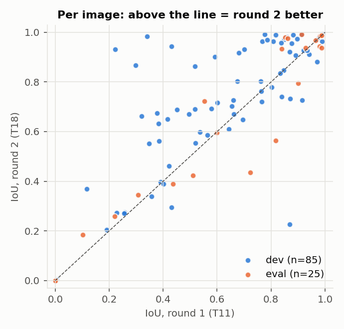
Every image: IoU in round 1 (x) vs round 2 (y). Above the dashed line = better in round 2.
Did round 2 fix the round-1 failures?
Round-1 failure cause
n
IoU round 1
IoU round 2
white / pale background
18
0.22
0.27
shaded side missed
15
0.52
0.66
colour gate removes egg
10
0.22
0.46
egg partly hidden
5
0.36
0.52
bright object picked
5
0.50
0.51
ash camouflage
4
0.23
0.22
touching eggs
1
0.23
0.27
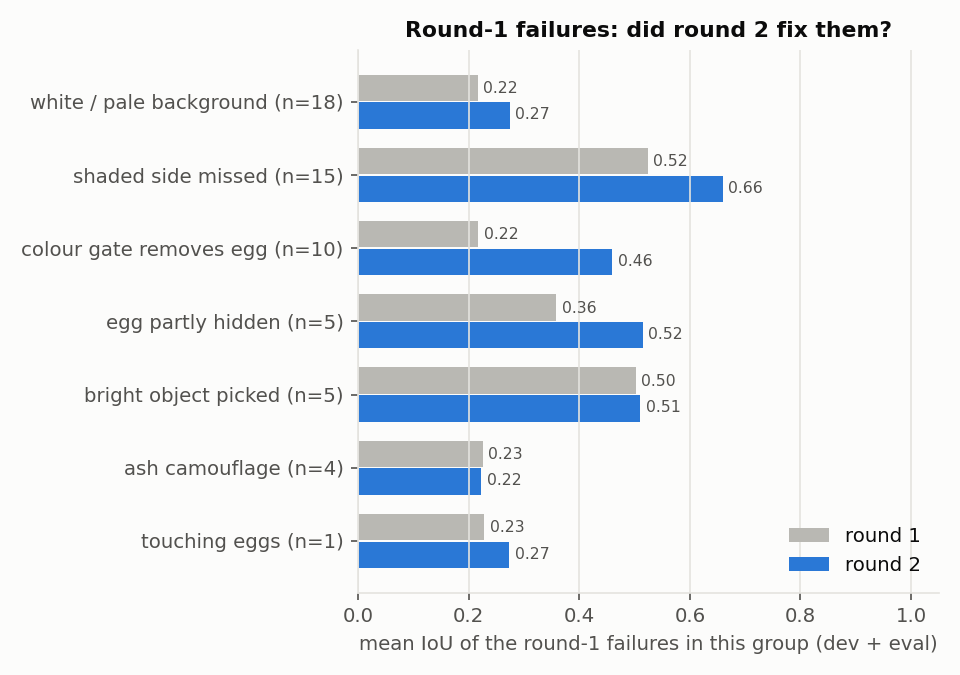
The 58 round-1 failures (IoU < 0.7), grouped by their round-1 cause: mean IoU before and after.
12 of 58 round-1 failures are now ≥ 0.7
Largest gains where round 2 aimed: colour gate 0.22 → 0.46, shaded side 0.52 → 0.66
White / pale background, the biggest group, barely moved (0.22 → 0.27). Edge ranking (T15c) only re-orders candidates the brightness search already found; the edge-based candidates (T15b) changed nothing on those images
Ash camouflage and bright objects: no change
Biggest changes
Columns: image · GT · round-1 error map · round-2 error map (green correct, red false egg, blue missed)
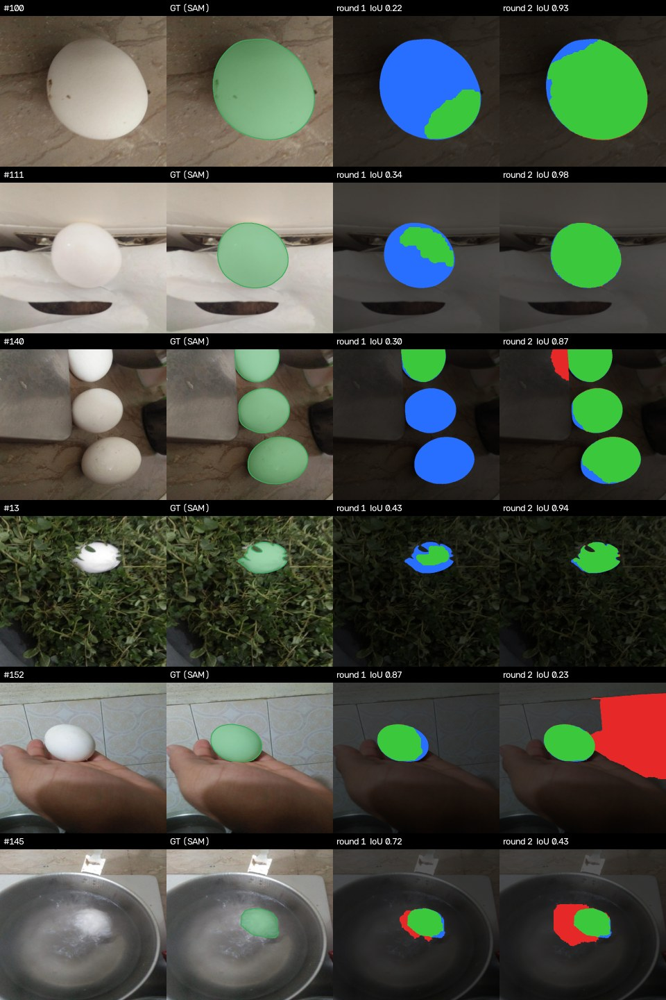
Top 4 rows: largest gains. Last rows: largest losses.
Gains, traced trial by trial in the dev logs: #100 and #140 from dropping the skin filter (T12), #13 from the ellipse prior (T13), #111 from blob splitting (T14)
Why some images got worse
Every image that dropped by > 0.1 (7, dev + eval), re-run with one round-2 change undone at a time (loss_check.py; analysis only, nothing picked from it). Bold = the undo that helps most
Image
Split
Round 1
Round 2
skin filter back on (T12)
no ellipse prior (T13)
no blob splitting (T14)
no edge ranking (T15c)
no shape/texture reject (T16)
#2
dev
0.91
0.73
0.83
0.92
0.73
0.73
0.73
#18
dev
0.43
0.29
0.28
0.47
0.29
0.31
0.29
#133
dev
0.87
0.73
0.76
0.85
0.73
0.73
0.73
#152
dev
0.87
0.23
0.20
0.22
0.98
0.23
0.23
#120
eval
0.90
0.79
0.96
0.91
0.79
0.79
0.79
#124
eval
0.82
0.56
0.56
0.82
0.56
0.56
0.56
#145
eval
0.72
0.43
0.43
0.72
0.43
0.43
0.43
Ellipse prior (T13) is behind 5 of 7: the enlarged ellipse is marked "probably egg", and where the surface next to the egg looks like it, GrabCut keeps it → false egg pixels beside the egg (#145: the water next to it). Same thing as the precision drop in the T13 card
Blob splitting (T14): #152 — with splitting off it is back to 0.98; most likely a watershed piece of the tile wall passed as an egg. The same change fixed #111 → it helps and hurts on pale backgrounds
Skin filter off (T12): #120 is the one image where the skin box was doing real work
What is still left
Still IoU 0
Split
Round-1 cause
Egg removed by saturation gate
IoU with that gate off too
#27
dev
ash camouflage
0%
0.00
#30
dev
white / pale background
0%
0.00
#78
dev
ash camouflage
0%
0.00
#116
dev
white / pale background
1%
0.00
#155
dev
white / pale background
4%
0.00
#160
dev
colour gate removes egg
46%
0.00
#161
dev
white / pale background
26%
0.69
#20
eval
colour gate removes egg
76%
0.00
#24
eval
colour gate removes egg
97%
0.00
#44
eval
colour gate removes egg
86%
0.00
#139
eval
white / pale background
20%
0.00
7 dev + 4 eval images still at IoU 0. Re-run with the saturation gate off as well: only #161 comes back
Backlit hand (#20, #24, #44 — the eval-only dark-room scene): egg held up against a lamp, the wall behind is brighter than the egg and the egg looks brown. The saturation gate removes most of it, but even without the gate the search finds nothing → a "brightest egg-shaped blob" search can't solve backlit shots
Pale backgrounds: still the biggest group. Needs a cue that isn't brightness or colour (shading gradient, cast shadow) — or a learned model
Ellipse prior: one scale (×1.15) for every egg. Next try: grow it only on the darker side of the egg, or stop GrabCut from keeping "probably egg" pixels that look like the background
Method lesson: a second round designed from looking at failures took dev from 0.589 to 0.669 and eval nowhere. With 85 dev images in 14 scenes, a third round should use cross-validation over scene groups, not one dev / eval cut, to tell real gains from dev-scene fitting
6. Round 3 — trying to stop the overfitting
Why
Round 2: dev 0.589 → 0.669, eval 0.618 → 0.613. The dev gain did not carry over
Two suspects:
too many decisions on the same 85 images (32 trials incl. round 3, 12 sweeps) — the winner of many close comparisons always looks better than it is
image mean: a 12-image scene counts 4× a 3-image one, so a change that helps two big scenes looks like a general gain
What changed in the process
Decide per scene (14 dev scenes). Keep a change only if all four hold, against the pipeline without it:
mean scene IoU goes up
more scenes helped than hurt (± 0.01)
no scene loses more than 0.1
scene bootstrap (2000 resamples of the scenes): mean gain > 0 in ≥ 90% of them
No sweeps: every change keeps the value it had before any sweep (e.g. edge weight 0.5, not the swept 0.3)
Forward selection from the round-1 pipeline: try every change, add the passing one with the largest gain, repeat
Leave-one-scene-out (LOSO): run the whole selection 14 times, each time without one scene, and score the left-out scene with what was chosen. In-sample minus LOSO = how much the selection overfits
Rule and selection written and committed (src/eggseg/scenes.py) before any round-3 run
To make LOSO cheap: all 48 on/off combinations of the changes run once on dev (loso.py); the grid reproduces T11, T12, T13 and T17 image by image
Step 1 — the round-2 decisions, judged per scene
Round-2 change
vs
Δ IoU, image mean (round-2 rule)
Δ IoU, scene mean
Scenes helped / hurt
Worst scene
P(gain), scene bootstrap
Round-3 rule
skin filter off (T12)
T11
+0.020
+0.014
3 / 2
-0.03
0.933
pass
ellipse prior (T13)
T12
+0.037
+0.045
12 / 2
-0.08
0.999
pass
blob splitting (T14)
T13
+0.004
+0.005
2 / 2
-0.07
0.692
fail
edge ranking (T15c)
T13
+0.006
-0.001
6 / 3
-0.25
0.520
fail
shape / texture reject (T16)
T13
+0.010
+0.016
2 / 0
+0.00
0.956
pass
all together (T17)
T13
+0.014
+0.014
8 / 4
-0.25
0.716
fail
edge weight 0.3 (T18)
T17
+0.009
+0.018
1 / 0
-0.00
0.890
fail
round 2 as a whole (T11 → T18)
T11
+0.080
+0.091
11 / 1
-0.03
1.000
pass
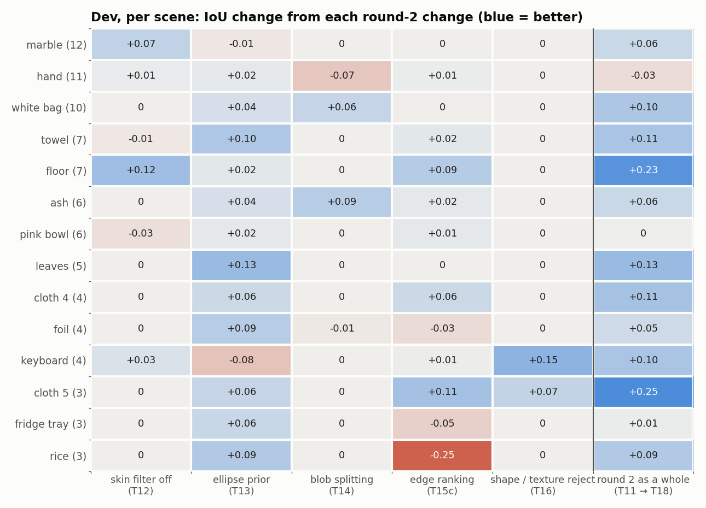
Dev, per scene: IoU change from each round-2 change, on the trial it was tested on. Scene = most common background (images).
3 of 5 round-2 changes pass. Blob splitting and edge ranking fail
Edge ranking: small plus on the image mean, but it costs the rice scene 0.25 — exactly the kind of gain round 3 is meant to catch
Blob splitting: + on ash and white bag, − on the hand scene → a coin flip, not a method
Ellipse prior: helps 12 of 14 scenes → the most general round-2 change
Step 2 — a safer ellipse prior (failed)
Idea (from the round-2 losses): stop GrabCut from growing past the fitted ellipse ×1.3. Scale fixed before the run
T19b: dev IoU 0.569 vs 0.635 without the clip. Loss is all recall: eggs reach well past 1.3× the ellipse fitted to what the search found
Not re-tuned with a looser value — that would be the same dev fitting again. Logged as a failure
Step 3 — selection on all 14 scenes
Step
Already in
Candidate
Δ scene IoU
Helped / hurt
Worst scene
P(gain)
Rule
1
none (round-1 pipeline)
ellipse prior
+0.051
12 / 1
-0.05
1.000
pass → added
1
none (round-1 pipeline)
skin filter off
+0.014
3 / 2
-0.03
0.933
pass
1
none (round-1 pipeline)
shape / texture reject
+0.010
3 / 0
+0.00
0.956
pass
1
none (round-1 pipeline)
blob splitting
+0.007
1 / 2
-0.06
0.612
fail (more helped, bootstrap)
1
none (round-1 pipeline)
edge ranking
+0.002
6 / 3
-0.17
0.592
fail (no scene broken, bootstrap)
1
none (round-1 pipeline)
ellipse prior + clip
-0.020
4 / 8
-0.11
0.059
fail (mean up, more helped, no scene broken, bootstrap)
Round-2 rule: in-sample 0.661, held-out scene 0.639 → optimism +0.023. Selection overfitting is real but small. (Round-2 rule re-run on the grid: no sweeps, so it ends at T17 without blob splitting, in-sample 0.661 — not exactly T18)
My stricter rule did not reduce it: optimism +0.040, held-out scene 0.615. With 13 scenes per fold, changes near the threshold flip between pass and fail (skin filter off: picked in 9 of 14 folds) → less stable choices (5 different sets vs 4). A stricter test is not a more stable one
Stable under both rules: ellipse prior, picked in 14 / 14. Under the scene rule blob splitting is picked in 1 fold, edge ranking in 1 → they fit a few scenes. The clip: 0 folds
Step 5 — eval, third look (after T21 was frozen)
Run once by the same final_eval.py into results/final_eval_round3/; nothing was changed after it
Dev, in-sample
Dev, held-out scene (LOSO)
Eval
Eval 90% interval
Gap in-sample − eval
Gap held-out − eval
Round 1 (T11)
0.589
–
0.618
0.495 – 0.735
-0.029
–
Round 2 (T18)
0.669
0.639
0.613
0.485 – 0.736
+0.056
+0.025
Round 3 (T21)
0.655
0.615
0.612
0.493 – 0.731
+0.043
+0.003
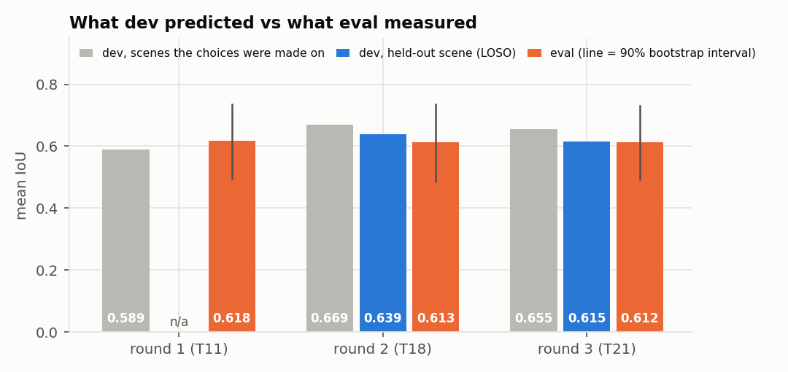
Round 1 had no scene-level selection to re-run, so no LOSO number.
Round 3 on eval: 0.612, the same as rounds 1 and 2. Paired with round 1, image by image: -0.006 (90%: -0.042 to +0.027) → no measurable difference
From round 2 to 3, 0 eval images moved by more than 0.1 → dropping blob splitting and edge ranking cost nothing on eval
What changed is the prediction. Round 2's dev number (0.669) overshot eval by 0.056. Round 3's held-out-scene number (0.615) was off by +0.003
Eval: 25 images, 5 scenes → the 90% interval is about ±0.12. It can't rank the rounds; the video in §7 is one more unseen scene
What I take from it
The overfitting here was in the number, not a method that falls apart: the in-sample dev IoU promised a gain that unseen scenes don't show. The fix that worked: judge and report on held-out scenes (LOSO), never on the scenes the choices were made on
Of round 2's 0.056 gap, the selection explains about 0.023 (LOSO). The rest is that eval scenes are different from dev ones → more varied dev scenes or new cues would help; a stricter rule doesn't
My stricter keep rule was not the fix I expected: with 14 scenes it decides less stably. Worth retrying only with more scenes
Final pipeline: T21 — three changes instead of five, same eval, an honest estimate. Used for Task 4, where round 1 does clearly better (§7)
Five videos, 1280×720, 24 fps: sam2_tracking.mp4 (reference), classical_T21_tracking.mp4 (planned pipeline + tracker), side_by_side_T21.mp4, and the round-1 versions classical_T11_tracking.mp4, side_by_side_T11.mp4 (run after the fresh test, below)
Same colour = same egg: each classical id takes the colour of the SAM egg it follows most
The video
"Raw and Boiled Egg Spinning" (Mocomi, YouTube): 60 s, 24 fps, 1920×1080 → processed at 1280×720
Egg scene: frames 222–1004 (783 of 1440 frames). Two white eggs on a dark table; a hand spins them, picks them up and covers them; white text labels ("Raw Egg", "Plane surface") over the scene. Title cards before and after, closed by an iris wipe
A scene none of rounds 1–3 has seen → also used as a fresh test (below)
Reference: SAM 2.1 video tracking
Same models as Task 1: Grounding DINO ("egg.") → boxes → SAM 2.1 Hiera Base+, but its video predictor: a memory of past frames carries each egg's mask forward, so each egg keeps one id
All 1440 frames don't fit in this laptop's memory → chunks of 48 frames (2 s). The masks on a chunk's last frame are the prompts for the next chunk, so ids carry over. Grounding DINO runs again at every chunk start for new eggs; while nothing is tracked it scans every 6th frame
Result: 2 ids in the whole video, both eggs, so no id changes and nothing on the title cards or text labels
SAM is the reference, not the truth (as in Task 1): in fast spins and under the hand its masks can be off too
My tracker, on top of T21
Per frame: the round-3 pipeline T21 (unchanged — same code and parameters as Tasks 2–3) → egg instances
Match frame to frame: Hungarian assignment on mask IoU between a track's last mask shifted by its velocity and each new egg. No overlap but close (≤ 1.5 egg diameters + speed × frames missed) → weak match, so a fast-spinning egg is still followed
A new egg gets an id only after 3 frames in a row → one-frame false eggs never get an id
A lost egg keeps its id for 2 s (48 frames) → same id when it comes back from under the hand
No appearance model: the two eggs look the same, so position and motion are all there is
Results vs SAM 2.1
vs SAM 2.1, every frame
T21 + tracker (round 3, planned)
T11 + tracker (round 1, after the fresh test)
Reference eggs (SAM, summed over frames)
1562
1562
Classical eggs (summed over frames)
1413
1356
Recall — SAM eggs matched (IoU ≥ 0.5)
0.535
0.848
Precision — classical eggs that match a SAM egg
0.591
0.976
Mean IoU of matched eggs
0.910
0.940
Mean IoU per frame, all eggs (frames with eggs)
0.671
0.864
Egg count exactly right (frames with eggs)
0.406
0.700
ID switches
8
2
MOTA
0.159
0.826
IDF1
0.216
0.605
Egg ids: SAM / classical
2 / 7
2 / 6
False eggs in frames without eggs
1
1
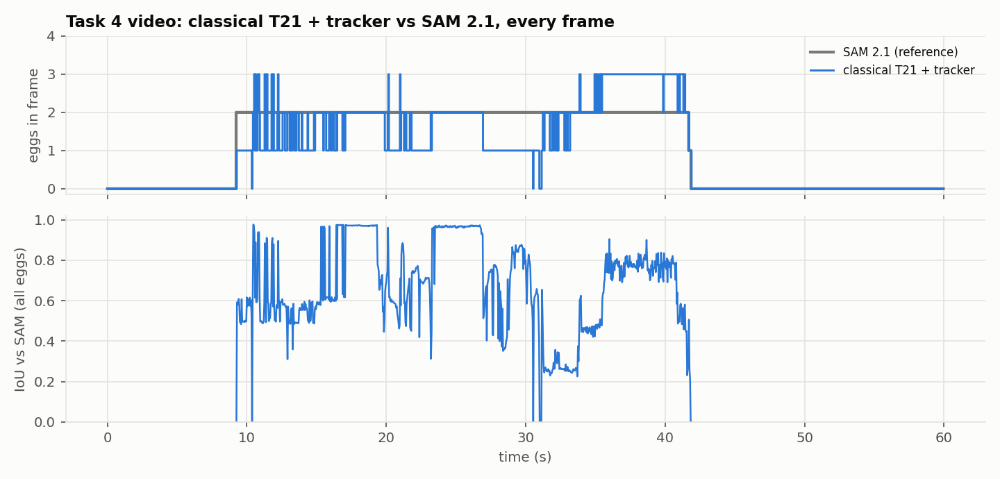
Every frame: eggs found (top) and IoU vs SAM (bottom). Gaps = frames without eggs in either.
T21 is the planned pipeline (frozen in round 3, before the video). The T11 column was added after the fresh test below, so it saw the video and is not a clean test. The text here is about T21
When an egg is matched, its mask is close to SAM's: matched IoU 0.910 → the outline is fine; finding and separating the eggs is not
Low MOTA (0.159): misses (727) + false eggs (578) out of 1562 reference eggs. Id switches (8) are a tiny part
Outside the egg scene (title cards, iris wipe): 1 false egg in total
Where the errors come from
Each missed SAM egg and each false classical egg gets one cause, from the masks (errors() in task4_analyze.py); checked by eye on frames from each group
Error, one cause each
Count
Share
When (s)
Missed SAM eggs: 727
merged with the other egg
374
51%
9–17, 19–21, 29–30
mask too big (spills onto table or reflection)
132
18%
12–15, 20, 22, 27–29, 30 …
mask too small (part of the egg)
4
1%
13, 16, 19
mask off target
17
2%
10, 16, 31–34, 41
segmented, but not kept by the tracker
12
2%
20, 23, 28, 30, 34
not segmented
188
26%
9, 10, 20, 21–23, 27–34 …
False classical eggs: 578
wrong shape of a real egg
374
65%
9–17, 19–21, 22, 27–29, 31–37 …
below an egg (reflection position)
192
33%
10–12, 31–34, 35–42
elsewhere
12
2%
20–22, 23, 42
Touching eggs, 9–17 s (374 misses, 51%): the two eggs touch and stand on their own bright reflections → eggs + reflections become one blob, and watershed doesn't split it. Round 1 separates the same two eggs (fresh test below), so the reflections are the problem more than the touching
Reflections: the table is glossy, and the reflection under an egg is white, egg-sized and roughly egg-shaped → 192 false eggs right below a real egg, and masks that spill onto the reflection (132 misses)
Hand + spin, mostly 27–34 s (188 misses): the egg under the fingers is blurred and half hidden → not segmented at all. SAM keeps it from its memory of earlier frames
The tracker drops only 12 eggs the segmentation had → the low score comes from segmentation, not from matching
No step of the pipeline handles reflections or motion blur, and none was tuned on this video → a scene shift, as on eval
Worst frames
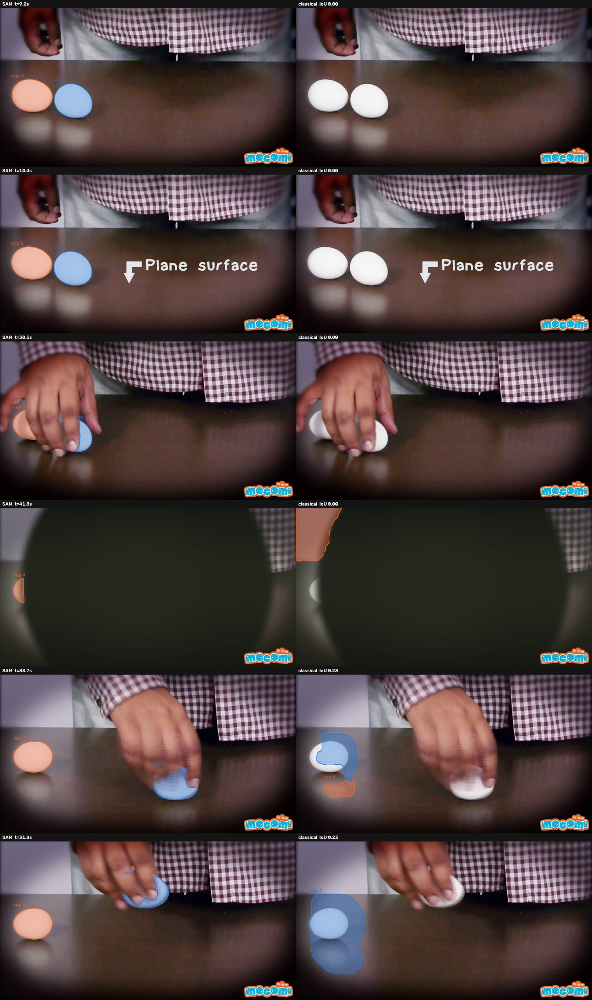
The six lowest-IoU frames, at least 1 s apart. Left: SAM 2.1, right: classical T21 + tracker. Same colour = same egg.
9.2 s, 10.4 s: two touching eggs, nothing shown. The only detection is one blob over both eggs (IoU 0.3 with each). At 9.2 s it is in its 2nd frame, and a new egg needs 3. Around 10.4 s the detection flickers between one merged blob and two separate eggs, frame to frame. The merged blob went to an unconfirmed track, so nothing is drawn
30.5 s: a hand covers both eggs. SAM still has both; the classical pipeline finds neither
31.8 s, 33.7 s: the egg under the hand is missed; the other egg's mask includes its reflection (and at 33.7 s the reflection is a second egg)
41.8 s: iris wipe at the end, a sliver of egg; the classical pipeline marks a bright patch at the top-left edge instead
ID switches
7 classical ids for SAM's 2. Two switches traced by hand:
~21 s: one blob held the egg in the hand, a strip of light background above it and the other egg. When it split, its id stayed on the wrong egg
~33.8 s: the egg under the hand was lost and its track coasted; it then took the other egg, whose mask had spilled into a big blob. My gate scales with the larger of the two sizes, so the oversized blob widened it → a flaw in my tracker. Left as found, not tuned on this video
The colours in the classical video follow the SAM egg each id matches most → after a switch the colours disagree; that is the switch, not a drawing bug
Fresh test: rounds 1–3 on the video
None of the three rounds was built with this video in view → a clean test after eval was looked at three times. Segmentation only, no tracker, every 6th egg frame vs SAM
Video frames (every 6th with an egg), no tracker
IoU mean
IoU median
90% interval (2 s blocks)
Frames with IoU < 0.5
Round 1 (T11)
0.868
0.957
0.811 – 0.920
4 / 131
Round 2 (T18)
0.677
0.697
0.613 – 0.740
29 / 131
Round 3 (T21)
0.681
0.697
0.616 – 0.746
28 / 131
Round 3 − round 1, same frames
-0.187
-0.253 – -0.123
Round 3 − round 2, same frames
+0.004
+0.001 – +0.007
Round 2 − round 1, same frames
-0.191
-0.262 – -0.128
Round 1 is clearly best on the video: 0.868 vs 0.681 for round 3, paired -0.187 (90%: -0.253 to -0.123). On eval the three rounds were tied (§6) → the changes made on dev hurt on this new scene
Still one scene (one table, one light, two eggs) → it says the round-2/3 changes are not safe everywhere. It doesn't say round 1 is better in general
Which round-3 change costs on the video
Diagnosis after the numbers above were seen. Same frames, round 3's path one change at a time; only reported, nothing chosen from it
Round 3's path, one change per step
Change
Video IoU
Step Δ
90% interval
Dev scene Δ when kept
T11
round-1 pipeline
0.868
–
–
–
T19
ellipse prior
0.811
-0.057
-0.098 – -0.022
+0.051
T20
shape / texture reject
0.811
+0.000
+0.000 – +0.000
+0.013
T21
skin filter off
0.681
-0.130
-0.192 – -0.070
+0.011
Skin filter off costs the most. In this video the skin colour box (Chai & Ngan, YCbCr) covers 95% of the table just under the eggs (where the reflections are) and 49% of everything else, but only 7% of the eggs (every 6th egg frame)
So with the filter on, the table and the reflections are taken out before the egg search → the eggs stay apart. Off → egg + reflection + the other egg become one blob (the merges and spills above)
On the photos the same box ate warm-lit eggs (T12: #100, #140), which is why rounds 2 and 3 turned it off. The scene rule kept that by a thin margin: dev scenes +0.011, 3 helped / 2 hurt, P(gain) 0.95, and one step earlier it had failed (P 0.898)
Ellipse prior costs less, mostly in hand frames (19–21 s, 28–35 s): the egg's mask grows a halo into the dark table beside it
Lesson: a colour filter can be noise on one set of scenes and essential on another. 14 dev scenes are too few to tell → more varied scenes before trusting any keep / drop (as in §6)
Round 1 + the same tracker (run after the fresh test)
Not planned: run because the fresh test showed round 1 is better here → it saw the video and is not a clean test. Same tracker, same settings, nothing tuned. Numbers in the second column of the table above
MOTA 0.159 → 0.826, IDF1 0.216 → 0.605, precision 0.976: with the eggs segmented apart and no reflections, the same tracker does well
No merges, spills or reflection eggs left. The 230 "not segmented" misses fall at 19–23 s and 27–34 s (an egg in or under the hand, checked on sample frames) and in the iris wipe. The 32 false eggs are mostly at 19–22 s (at 20.4 s: a strip of light background between the hand and the shirt)
2 id switches, both the same kind: an egg under the hand for longer than the 2 s coast (~27–31 s and ~31–34 s) comes back with a new id → IDF1 stays at 0.605. With two identical eggs a longer coast would only be a guess, so I left it
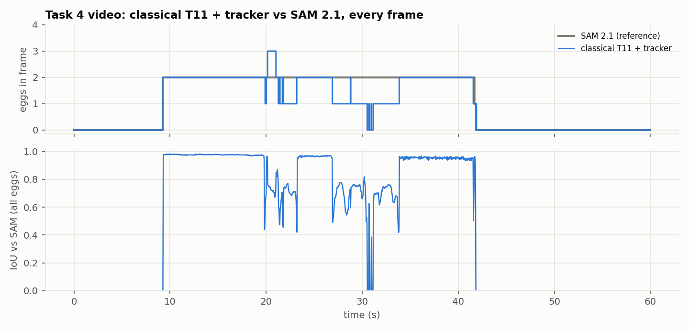
Round 1 (T11) + the same tracker vs SAM 2.1, every frame.
What I'd do next
Skin box: on for this kind of scene, off for warm-lit eggs on the photos → it needs a rule, not one global switch. One candidate is T12b (skin removed only in big regions touching the border): here the table is one such region. Untested on the video, and it would need new scenes to judge, not this one
Reflections: a reflection is darker and blurrier than the egg right above it → reject a blob that sits under a brighter egg-shaped blob
Eggs under the hand: carry the mask forward with optical flow while the egg is covered, instead of dropping it
Tracker gate: use the track's own size, not the larger of the two, so a spilled blob can't widen it
8. How to run
pip install -r requirements.txt
python scripts/download_assets.py # SAM 2.1 checkpoint (+ dataset if missing)
python scripts/task1_sam2_groundtruth.py # Task 1 -> ground_truth/
python scripts/make_split.py # Task 2a -> data/splits/split.csv
# Task 2b: one trial / a sweep (dev only)
python scripts/run_experiment.py experiments/T11/config.yaml --worst 8
python scripts/sweep.py experiments/T8/config.yaml grabcut.bg_dilate "[25, 45, 70]" --name T8_bg_dilate
python scripts/build_log.py # -> experiments/LOG.md, log.json, progress.png
# Task 3: the single eval run, then analysis + this report
python scripts/final_eval.py # trial named in configs/final.yaml
python scripts/analyze.py # -> results/analysis/
python scripts/ablation.py # dev only -> results/ablation/
# Round 2: second, separate eval run of the round-2 pipeline, then the comparison
python scripts/final_eval.py --config configs/final_round2.yaml --out results/final_eval_round2
python scripts/compare_rounds.py # -> results/round2/ (tables, plots, changes.jpg)
python scripts/loss_check.py # -> results/round2/loss_check.json
# Round 3: per-scene check, 48-pipeline dev grid + leave-one-scene-out, then the third eval run
python scripts/scene_check.py # -> results/round3/scene_check.json, .png
python scripts/loso.py # -> results/round3/grid_dev.csv, loso.json
python scripts/final_eval.py --config configs/final_round3.yaml --out results/final_eval_round3
python scripts/round3_check.py # -> results/round3/check.json, predicted_vs_eval.png
# Task 4: the video is not in the repo (download it from YouTube, see README)
python scripts/task4_sam_video.py --video <mp4> # frames + SAM 2.1 tracks -> data/video/
python scripts/task4_track.py --trial T21 # classical T21 + tracker
python scripts/task4_analyze.py --trial T21 # -> results/task4/ (metrics, plots, the 3 videos)
python scripts/task4_holdout.py # rounds 1-3 on the video -> results/task4/holdout.json
python scripts/build_report.py # -> report/report.html + report.pdf
pytest tests/
Tested on Windows 11, Python 3.13, PyTorch 2.6 + CUDA 12.4, RTX 4070 Laptop (8 GB). Task 2/3 need only OpenCV, NumPy, PyYAML, matplotlib (CPU)
9. AI tools
Claude Code (AI coding assistant) used for: writing the scripts (GT pipeline, split, classical pipeline, experiment runner, evaluation, figures, Task 4 tracker and video export) and drafting this report
Decisions (what to try next, keep / discard, failure labels) were made by looking at dev results and worst-case panels; every number in this report is filled in by build_report.py from saved result files
10. References
N. Otsu. A threshold selection method from gray-level histograms. IEEE Trans. SMC, 1979
D. Chai, K. N. Ngan. Face segmentation using skin-color map in videophone applications. IEEE Trans. CSVT, 1999
J. Matas et al. Robust wide-baseline stereo from maximally stable extremal regions (MSER). BMVC, 2002
A. Fitzgibbon, M. Pilu, R. Fisher. Direct least square fitting of ellipses. IEEE TPAMI, 1999
J. Canny. A computational approach to edge detection. IEEE TPAMI, 1986
Y. Boykov, M.-P. Jolly. Interactive graph cuts for optimal boundary & region segmentation. ICCV, 2001
C. Rother, V. Kolmogorov, A. Blake. "GrabCut": interactive foreground extraction using iterated graph cuts. SIGGRAPH, 2004
L. Vincent, P. Soille. Watersheds in digital spaces: an efficient algorithm based on immersion simulations. IEEE TPAMI, 1991
S. Liu et al. Grounding DINO: marrying DINO with grounded pre-training for open-set object detection. 2023
N. Ravi et al. SAM 2: Segment anything in images and videos. 2024
M. Oquab et al. DINOv2: learning robust visual features without supervision. 2023
H. W. Kuhn. The Hungarian method for the assignment problem. Naval Research Logistics Quarterly, 1955
K. Bernardin, R. Stiefelhagen. Evaluating multiple object tracking performance: the CLEAR MOT metrics. EURASIP JIVP, 2008
E. Ristani et al. Performance measures and a data set for multi-target, multi-camera tracking (IDF1). ECCV workshops, 2016